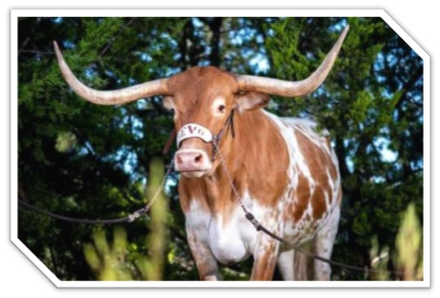

Back to Home
Education
Previous degrees
Master of Library and Information Science (The University of Texas at Austin)
With a focus on academic research libraries, and private industry libraries
Bachelor of Arts in Linguistics (The University of Texas at Austin)
Cum laude, with special honors in the major; minors in Russian and Spanish
The University of Texas at Austin

Current Degree
Bachelor of Science in Computer Science (Southern Connecticut State University)
Back to Home